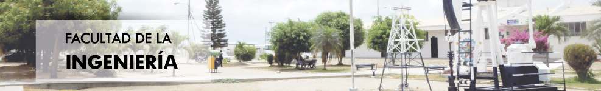

Facultades de la UPSE
Facultad de Ciencias Adminitrativas
- Carrera: Administración de empresas
- Carrera: Contabilidad y Auditoría
- Carrera: Ingeniería en Gestión y Desarrollo Turístico
Facultad de Ciencias de la Educación e Idiomas
- Carrera: Educación Parvularia
- Carrera: Educación Física Deportes y Recreación
Facultad de Ciencias de la Ingeniería
- Carrera: Ingeniería Civil
- Carrera: Ingeniería en Petróleo
Facultad de Ciencias del Mar
- Carrera: Biología Marina
Facultad de Ciencias Sociales y de la Salud
- Carrera: Enfermería
Facultad de Sistemas y Telecomunicaciones
- Carrera: Informática
- Carrera: Electrónica y Telecomunicaciones
Facultad de Ciencias Agrarias
- Carrera: Ingeniería Agropecuaria